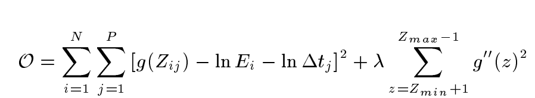
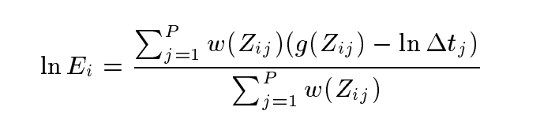
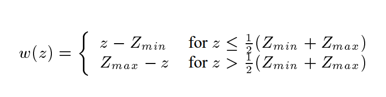

Abstract
Thanks to the modern imaging devices like DSLR and cell phones, taking photos nowadays is easy and enjoyable. However, we have no way to alter the fact if there is a scene with high contrast of lighting, we will lose detail of the bright part of the image if we want to capture the detail at the dark part, and vice versa. Therefore, as we could increase exposure to get a more clear view of the scene under shadow, and decrease exposure to get a photo which shows detail of the brighter part, we could find a way to combine those two (or even more) images which contains detail for the entire scene, and this is why we want to achieve imaging with High Dynamic Range.
Process of HDR Stacking
To stack HDR images we need the following procedures:
- Image Alignment: Although most photographers stack HDR images using the photos that they take using tripods. However, there could still be some pixels off between each photos taken, since the slight vibration of the ground, the wind, the slight vibration caused by the camera when taking photo, move of the object of the scene all contribute to change the image at screen space slightly. Therefore, it is essential that we align each photo to avoid ghost shadows in the result image.
- Recovering Camera Response Curve: In order to produce an HDR radiance map, we need to first reconstruct the camera response curve from the images. According to equation (3) of the paper Recovering High Dynamic Range Radiance Maps from Photographs by Debevec and Malik, we could reconstruct the curve by sample points on each of the images to get data points to fit for an equation, where the equation maps pixel values to the log irradiance values.
- Radiance Mapping: Once the relationship between pixel value and log irradiance is known, we could map the pixel value of each images and average with a weighting function to calculate the radiance value of a certain pixel in the final hdr image, according to equation (6) of Debevec's paper.
- Tone Mapping: PLACEHOLDER
Image Alignment
Image alignment plays an important role in HDR stacking. We need to make sure that there is little or no ghost shadows caused by the vibration of camera or change of the scnene in the final HDR image. Therefore, I implemented a popular image alignment algorithm using Mean Threshold Bitmap (MTB).
In my implementaton, I first converted all images into grayscale, then calculate the median exposure among the exposure times of all the images, and set the median image as the base image. Each image will be performed shifting to align with the base image. Between each image and the base image, I used the median exposure to threshold the input, and create a binary threshold bitmap for each image. I built an image pyramid for each pair which tests 9 offsets of the non-base image and compare the sum of 1s of the xor of the two threshold bitmaps. Then I chose the offset that minimize the sum. I also made an excluding bitmap that eliminate the pixels which have values close to the median, which introduce noise to our algorithm, and I choose the value for exclusion to 4, as suggested by openCV (A smaller exclusion range will result in more noise, and larger exclusion range will cause image alignment to be not as accurate).
Image Alignment ON/OFF
As a result, image alignment makes the image look a lot better after radiance mapping and tone mapping. As I used the same exclusion range as the openCV implementation, the result for my alignment is pretty similar to the openCV result.

Camera Response Curve Reconstruct
We need to reconstruct the camera response curve in order to quickly convert pixel values to relative radiace to produce the HDR image.
For implementation of camera response curve reconstruction, I first sample points evenly over the images, get the value of each of the RGB channel and construct matrix correspondingly. For each photo, we also need the exposure time in order to correctly calculate the response curve. According to the equation below
With the sampled data and the robust SVD algorithm of numpy, we could calculate a data-fitting equation for the response curve, which will be used as g term in Debevec's paper.
Curve Obtained
By executing the algorithm stated above on the hallway images from Original Images section, I got a response curve of the image set and the curve include three components, each of the three RGB channels.
Radiance Mapping
Now we have the g function recovered, we need to find a way to calculate the radiance for each pixel on our HDR image. The equation (6) in Debevec's paper tells us how to compute the result:
We could simply reuse the weight function that we used in the camera response recovery procedure for better accuracy, where
The procedure for mapping is to split the bgr channels for each images in the image sequence, also setting up a look up table for the weight (array of 256 integers) so the compute could be faster. For each image, we first look up each pixel value into the value in g function table. With help from the multiply function of numpy and LUT function of openCV, we could quickly compute the result for each image, and weight each pixel according to the weight table.
Radiance Heat Map (Original Images)
I converted the mapped radiance into a heat map to visualize the region with high radiance and low radiance mapping.
Radiance Mapped HDR image on OpenHDR
We could see that the radiance mapped image has a wide dynamic range so it could present details at low-light region, but also could preserve detail at bright area. Now we need to consider proper tone mapping technique for a better looking image.

Problem Encountered and Improvement
In this part, Debevec's paper brings up the method for calculating the mapped radiance value for each resulting pixel location, but the way that we assemble the pixels as a whole image is not in scope for the paper. I originally calculated the value for each pixel and put the value in each pixel into the resulting image matrix, which took very long time for large images (4000x3000) since this algorithm's time efficiency is in polynomial. After exploring more about the matrix manipulations, I found out that I could use look up table to speed up the weight matching and raw image pixel value matching by a lot, and perform matrix multiplication after using look up table reduces the time needed for process a large image (from 10 minutes to a few seconds).
Tone Mapping
Dynamic Range of Different HDR images
Below are some images that are radiance mapped with my implementation, I upload those images onto OpenHDR viewer, and we could see that some images could have more radiance value mapped at higher range, possibly because the lighting is good at the sight, and some images could have radiance values on lower range. This shows that my implementation successfully create HDR images which could cover a wide range for the radiance mapping, but this also means that we need proper tone mapping for those HDR images so the color content in the image is artistic.